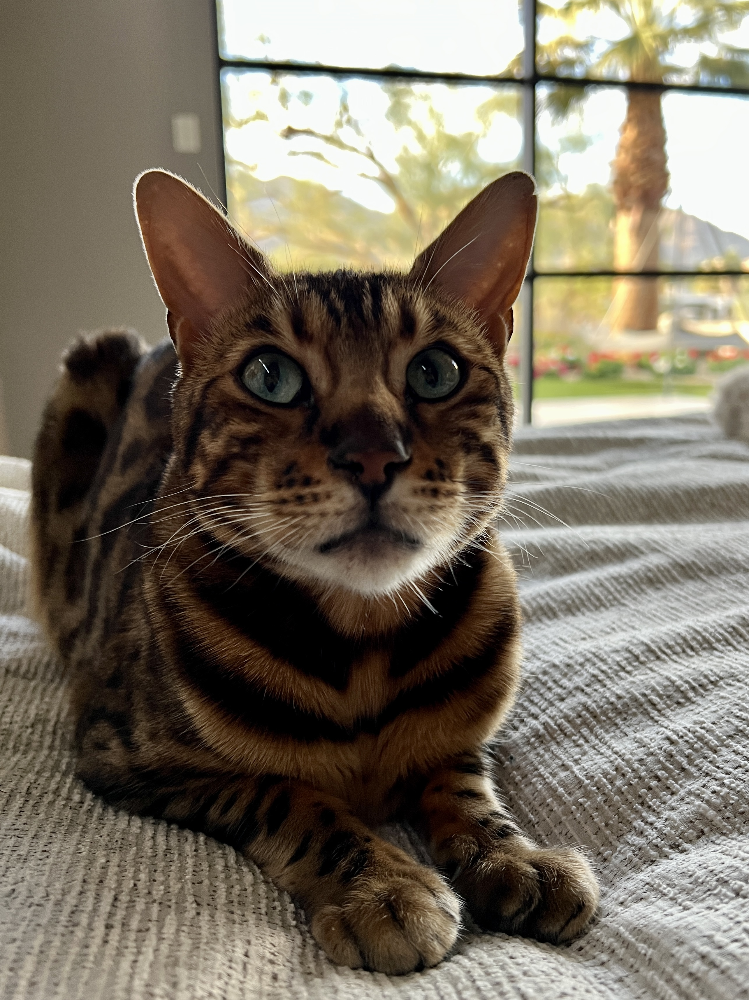
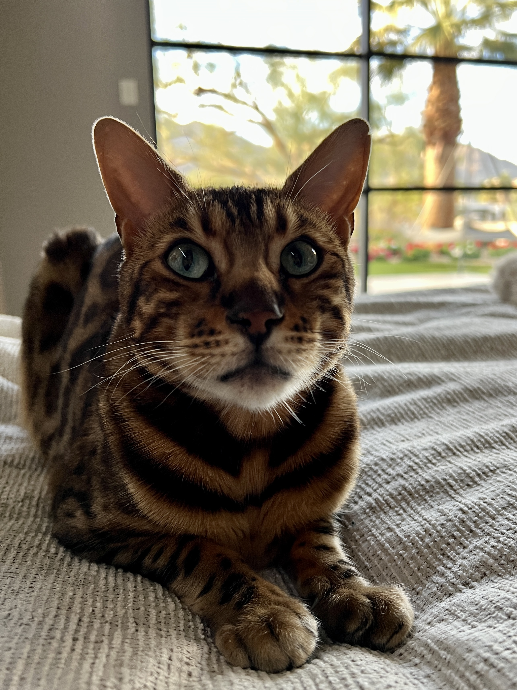

- Proficient in Adobe Suite
- Fluent in JS, Python, CSS, and HTML
- Skilled in No-Code Development: Typeform, Airtable, Zapier
- Experienced Video Editor

AIDAN LYNCH
Hey, I'm Aidan! I was born and raised in Kirkland, Washington (think Costco). From there I spent a lot of time in Seattle, attending The Bush School for my high school diploma. It was there that I fell in love with using P5JS for data visualization. I took those skills with me to CU, Boulder, where I learned what it means to be a Buff. I continued my studying of various coding languages and decided to provide more structure to my knowledge in the Leeds Business School. Studying marketing, I have further familiarized myself with data visualization and many other important tools. With all my preparation, I am ready to enter the business world and be an effective member at your company.
Partnered with Gilead Sciences to find a solution to increase high school aged participation in clinical trials. My team decided that it would be best for Gilead to increase education and information outreach through partnering with schools and holding information stands, brand ambassador programs, and relevant courses. Created a visual representation of our plan and presented to the Gilead Sciences team.
Guided a team through a charity fundraiser, creating a booth on Pearl ST where we would accept donations. Raised $250 for the Humane Society.

 
